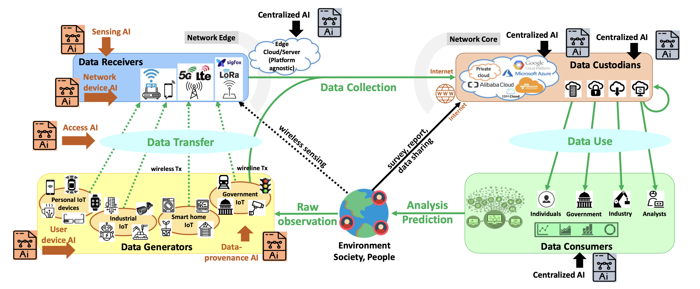
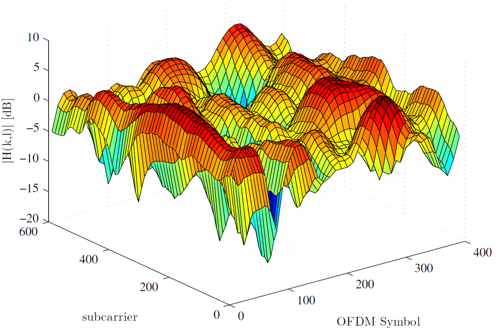

|
Peng CHENG
|
|
Senior Lecturer
Department of Computer Science and Information Technology
La Trobe University
Melbourne, Australia
E-mail: p.cheng AT latrobe.edu.au
|
About me
Dr. Peng Cheng is an Australian Research Council Discovery Early Career Research Fellow (ARC DECRA), Senior Lecturer (Tenured Associate Professor in U.S. systems), and PhD advisor in the Department of Computer Science and Information Technology at La Trobe University, VIC, Australia. He is a core member of the Cisco-LTU Research Centre for AI and Internet of Things. He is also an Honorary Senior Lecturer in the School of Electrical and Information Engineering at the University of Sydney, NSW, Australia. Before joining La Trobe University in 2020, Dr. Cheng worked as a Postdoctoral Research Scientist at CSIRO from 2014 to 2017 on projects such as Nagara communications and WASP indoor localization. From 2017 to 2020, he was an ARC DECRA Fellow/Lecturer at the University of Sydney. He holds a Ph.D. in Communication and Information Systems from Shanghai Jiao Tong University, China.
Recent News
06/2024 Personal website is accessible
Recent Research (Big Picture)

My current research focuses on AI-driven IoT and its impact on connectivity and intelligence. The above figure highlights a data lifecycle with four main entities: 1) Data generation through monitoring by smart IoT devices, 2) Data transfer via networks like 4G/5G or Wi-Fi to the Internet, 3) Data collection by custodians using cloud services, and 4) Access and analysis of data by consumers for big data mining. The data lifecycles also involves two shortcuts: one from the physical world directly to data receivers (wireless sensing), and another bypassing both generators and receivers to reach custodians. AI functions are typically centralized in clouds or data centers for big data analysis. My research aims to push AI capabilities to the network edge, i.e., bringing computation functions to data, close to data generators and receivers. This includes
Sensing AI at the Data Receivers
User and Network Device AI at the Data Generators and Receivers
Access AI in the Data Transfer Process
Data-provenance AI in the Data Generation Process
Such framework brings significant benetifs. It enables real-time analytics and decision-making, offering high-performance data computation right on the network edge and benefits multiple sectors such as agriculture and digital health. Please refer to the following papers for the details.
D. C. Nguyen, P. Cheng, et al., "Enabling AI in Future Wireless Networks: A Data Life Cycle Perspective," IEEE Communications Surveys & Tutorials, vol. 23, no. 1, pp. 553-595, Firstquarter 2021. [IEEE PDF]
P. Cheng, Y. Chen, M. Ding, Z. Chen, S. Liu and Y. -P. P. Chen, "Deep Reinforcement Learning for Online Resource Allocation in IoT Networks: Technology, Development, and Future Challenges," IEEE Communications Magazine, vol. 61, no. 6, pp. 111-117, June 2023. [IEEE PDF]
P. Cheng, Z. Chen, M. Ding, Y. Li, B. Vucetic and D. Niyato, "Spectrum Intelligent Radio: Technology, Development, and Future Trends," IEEE Communications Magazine, vol. 58, no. 1, pp. 12-18, January 2020. [IEEE PDF]
Previous Research
Compressive Sensing (CS) for Wireless Networks: CS is a powerful signal processing technique that leverages the sparsity of signals to efficiently acquire and reconstruct data. In the context of wireless networks, CS can significantly enhance performance and efficiency in various ways, including reducing the amount of data to be transmitted, improving signal quality, and optimizing resource usage. The following work exploits CS to achieve channel estimation for OFDM systems over doubly selective channels.

Performance Analysis and Optimization
Precoding design for MIMO
Publications
Note: * PhD student under my supervision
Full list of publications in Google Scholar.
[TSP] G. Wang*, P. Cheng, Z. Chen, B. Vucetic, and Y. Li, "Green Cell-free Massive MIMO: An Optimization Embedded Deep Reinforcement Learning Approach," to appear in IEEE Transactions on Signal Processing, 2024. [IEEE PDF]
[TSP] Y. Xu*, P. Cheng, Z. Chen, M. Ding, Y. Li, and B. Vucetic, "Task Offloading for Large-Scale Asynchronous Mobile Edge Computing: An Index Policy Approach," IEEE Transactions on Signal Processing, vol. 69, pp. 401-416, 2021. [IEEE PDF]
[TSP] Z. Yan*, P. Cheng, Z. Chen, Y. Li, and B. Vucetic, "Gaussian Process Reinforcement Learning for Fast Opportunistic Spectrum Access," IEEE Transactions on Signal Processing, vol. 68, pp. 2613-2628, 2020. [IEEE PDF]
[TSP] R. Zhang*, P. Cheng, Z. Chen, Y. Li, and B. Vucetic, "A Learning-Based Two-Stage Spectrum Sharing Strategy With Multiple Primary Transmit Power Levels," IEEE Transactions on Signal Processing, vol. 67, no. 18, pp. 4899-4914, 2019. [IEEE PDF]
[TSP] Y. Xu*, P. Cheng, Z. Chen, Y. Li and B. Vucetic, "Mobile Collaborative Spectrum Sensing for Heterogeneous Networks: A Bayesian Machine Learning Approach," IEEE Transactions on Signal Processing, vol. 66, no. 21, pp. 5634-5647, 2018. [IEEE PDF]
[TON] Z. Yan*, P. Cheng, Z. Chen, B. Vucetic, and Y. Li, "Two-Dimensional Task Offloading for Mobile Networks: An Imitation Learning Framework," IEEE/ACM Transactions on Networking, vol. 29, no. 6, pp. 2494-2507, 2021. [IEEE PDF]
[TMC] G. Wang*, P. Cheng, Z. Chen, B. Vucetic, and Y. Li, "Inverse Reinforcement Learning With Graph Neural Networks for Full-Dimensional Task Offloading in Edge Computing," IEEE Transactions on Mobile Computing, vol. 23, no. 6, pp. 6490-6507, 2024. [IEEE PDF]
[TMC] Y. Cai*, P. Cheng, Z. Chen, M. Ding, B. Vucetic, and Y. Li, "Deep Reinforcement Learning for Online Resource Allocation in Network Slicing," IEEE Transactions on Mobile Computing, vol. 23, no. 6, pp. 7099-7116, 2024. [IEEE PDF]
[TMC] S. Liu*, P. Cheng, Z. Chen, W. Xiang, B. Vucetic, and Y. Li, "Contextual User-Centric Task Offloading for Mobile Edge Computing in Ultra-Dense Network," IEEE Transactions on Mobile Computing, vol. 22, no. 9, pp. 5092-5108, 2023. [IEEE PDF]
[JSAC] Y. Lu*, P. Cheng, Z. Chen, W. H. Mow, Y. Li, and B. Vucetic, "Deep Multi-Task Learning for Cooperative NOMA: System Design and Principles," IEEE Journal on Selected Areas in Communications, vol. 39, no. 1, pp. 61-78, 2021. [IEEE PDF]
[JSAC] Y. Rui, Q. T. Zhang, L. Deng, P. Cheng, and M. Li, "Mode Selection and Power Optimization for Energy Efficiency in Uplink Virtual MIMO Systems," IEEE Journal on Selected Areas in Communications, vol. 31, no. 5, pp. 926-936, 2013. [IEEE PDF]
[TCOM] R. Zhang*, P. Cheng, Z. Chen, S. Liu, B. Vucetic, and Y. Li, "Calibrated Bandit Learning for Decentralized Task Offloading in Ultra-Dense Networks," IEEE Transactions on Communications, vol. 70, no. 4, pp. 2547-2560, 2022. [IEEE PDF]
[TCOM] C. Jiang*, Y. Wang, P. Cheng, and W. Xiang, "A Low-Complexity Codebook Optimization Scheme for Sparse Code Multiple Access," IEEE Transactions on Communications, vol. 70, no. 4, pp. 2451-2463, 2022. [IEEE PDF]
[TCOM] Y. Lu*, P. Cheng, Z. Chen, Y. Li, W. H. Mow, and B. Vucetic, "Deep Autoencoder Learning for Relay-Assisted Cooperative Communication Systems," IEEE Transactions on Communications, vol. 68, no. 9, pp. 5471-5488, 2020. [IEEE PDF]
[TCOM] P. Cheng, C. Ma, M. Ding, Y. Hu, Y. Li, and B. Vucetic, "Localized Small Cell Caching: A Machine Learning Approach Based on Rating Data," IEEE Transactions on Communications, vol. 67, no. 2, pp. 1663-1676, 2019. [IEEE PDF]
[TCOM] P. Cheng, Z. Chen, J. A. Zhang, Y. Li, and B. Vucetic, "A Unified Precoding Scheme for Generalized Spatial Modulation," IEEE Transactions on Communications, vol. 66, no. 6, pp. 2502-2514, 2018. [IEEE PDF]
[TCOM] P. Cheng, Z. Chen, F. de Hoog, and C. K. Sung, "Sparse Blind Carrier-Frequency Offset Estimation for OFDMA Uplink," IEEE Transactions on Communications, vol. 64, no. 12, pp. 5254-5265, 2016. [IEEE PDF]
[TCOM] P. Cheng, Z. Chen, Y. Rui, Y. J. Guo, L. Gui, M. Tao, and Q. T. Zhang, "Channel Estimation for OFDM Systems over Doubly Selective Channels: A Distributed Compressive Sensing Based Approach," IEEE Transactions on Communications, vol. 61, no. 10, pp. 4173-4185, 2013. [IEEE PDF]
[TCOM] P. Cheng, M. Tao, Y. Xiao and W. Zhang, "V-OFDM: On Performance Limits over Multi-Path Rayleigh Fading Channels," IEEE Transactions on Communications, vol. 59, no. 7, pp. 1878-1892, 2011. [IEEE PDF]
[TWC] D. Zhang, A. Li, M. Shirvanimoghaddam, P. Cheng, Y. Li and B. Vucetic, "Codebook-Based Training Beam Sequence Design for Millimeter-Wave Tracking Systems," IEEE Transactions on Wireless Communications, vol. 18, no. 11, pp. 5333-5349, 2019. [IEEE PDF]
Academic service
Reviewer
IEEE Transactions on Industrial Informatics
IEEE Access
ACM Transactions on Knowledge Discovery from Data
Mathematical Problems in Engineering
More details in Publons
Projects
Advertising Platform Development, 01.2022-Present
Provide advertising strategies and solutions for advertisers to maximize revenue
Provide automated advertising instead of manual selection
Use users' history information to build their profiles, and then select the target users
Campus Recommender System, 03.2021-12.2021
Built user profiles based on the data crawled from websites
Recommended information, such as courses from MOOC, and publications from Arxiv, to students
Recommended information from within and outside the university based on faculty research, courses taught, and interests
Online Education Explainable Recommender System, NSFC, 06.2018-12.2018
Summarized over 500,000 exercises and classified their knowledge points from all subjects
Applied matrix factorization for online learning and recommendation of exercises based on interaction of users
Added latent features learned by neural networks from exercises to online matrix factorization for better performance
Development of Memorizing Words APP, 06.2017-02.2018
Extracted the records of memorizing words of over 100,000 users from a database
Counted the pairs of error words with the co-occurrence rate to obtain a co-occurrence table
Provided words, along with situation pictures, to enhance memory and showed co-occurrence words from a table
Analysis of Film Review from Douban.com, 09.2016-03.2017
Crawled film reviews and ratings from websites
Segmented words and cleaned and processed texts
Added features learned by neural networks to matrix factorization to predict movie's ratings
Topics Analysis on Weibo, 05.2015-02.2016
Crawled Weibo messages from websites
Segmented words, cleaned and processed texts, converted the data for storage and analytics
Built a topic model LDA by C and applied it to obtain topics of Weibo for discovering hot events
Email-Based User Relationship Analysis, 10.2014-02.2015
Cleaned and processed the contents of over 100,000 emails to obtain message bodies
Built an author-topic model with biterm pattern by C
Used model to identify relationships between users based on communication contents
Smart Home System, 03.2011-02.2012
Designed and built a hardware system including PCB, sensors, and single-chip microcomputer
Developed a program of single-chip microcomputer with language C to realize the function of the system
Developed a human-computer interaction software with C# for signal reception, processing, and transmission
Education
M.E., Pattern Recognition and Intelligent Systems, Xiamen University, 06.2016
Awards: Principal Level Scholarship (1st in admission)
Main Courses: Machine Learning, Design of Neural Networks, Digital Image Processing, Time Series Analysis, Pattern Recognition, Data Mining and Its Application, Artificial Intelligent: Theory and Application, Recommender System.
B.E., Automation, Zhejiang University of Science and Technology, 06.2012
Main Courses: C Programming, Embedded Systems, Computer Network and Communication, Computer Control System.
Competitions and awards
First-Class Scholarship, Zhejiang University of Science and Technology, 10.2011
National Encouragement Scholarship, 12.2011 & 12.2010
The 2nd Prize in the National Advanced Mathematics Contest for Undergraduates (Zhejiang), 12.2011
The 2nd Prize in the Zhejiang Advanced Mathematics Contest for Undergraduates, 04.2011
The 3rd Prize in the Zhejiang Advanced Mathematics Contest for Undergraduates, 10.2009 & 04.2010
The 3rd Prize in the Zhejiang Physics Contest for Undergraduates, 12.2009 & 12.2010
The 1st Prize in the Electronics Design Contests, Zhejiang University of Science and Technology, 12.2010
Activities
Teaching Assistant, Xiamen University, 09.2013-01.2014 Assistant Mentor, Zhejiang University of Science and Technology, 09.2010-06.2011 Journalist, Press Corps of Zhejiang University of Science and Technology, 12.2008-06.2011 Founder and Editor in Chief, Say Ourselves, E-magazine, 12.2009-08.2011
Work experience
Research Scientist, AI Research Institute, Hithink RoyalFlush, 06.2019-Present
Research the newest machine learning algorithms and recommender system technology on stocks and hot news
Apply neural network models to drug-target interaction prediction and evaluate the performance
Publish papers and apply for relevant patents for the corporation
Give lessons on Artificial Intelligence and Recommender Systems to the staff
Research Assistant, Big Data Lab, Xiamen University, 09.2016-02.2019
Instructed two undergraduate and three graduate students in scientific research
Tracked, studied, reproduced, and improved up-to-date machine learning methods
Published papers on machine learning and recommender systems
Software Engineer, Dragon SOFT, 07.2013-06.2014
Developed an electronic target practice system for security guards’ shooting training
Recorded the track of users’ shooting behavior from sensors in a database
Built a model analyzing users’ shooting behavior concerning speed, acceleration and number of cylinders
Assistant Engineer, Gold Electronic, 03.2012-07.2012
Cooperated with motor companies, such as Zotye and BYD, on battery management system development
Developed a testing and analytics platform for performance of a lithium battery with C# (real-time data)
Used CAN bus to collect working data of batteries and analyzed the data for balance power
|